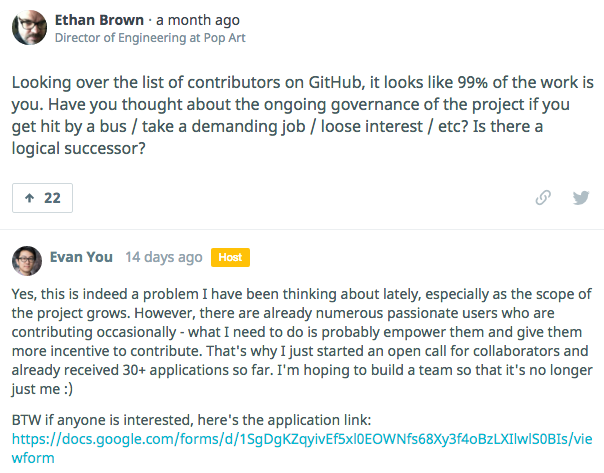

IPR frontend stack
And a demo of Vue.js
Use arrow keys for navigation
See overview by pressing
ESCLets start a new web project!
Which JS-framework should we use?
What problems needs to be solved?
Requirements for IPR
- SPA application
- Routing
- Communication with REST-server
- i18n (not sure, but probably)
- TDD & Code coverage
- ES6 / ESLint with Airbnb-styleguide (standard for DSS JS-projects)
Other "nice to have"-requirements
- Should be easy to change libraries/modules
- Modern frontend stack (ES6/ES7)
- No global CLI tools/modules (no
npm install -g) - KISS - so new developers should learn fast
Language: ES6 with Babel
* More popular than e.g TypeScript
* It is the standard, and we like standard.
Dependency management: npm
* Install and run everything with npm (npm run <task>)
* No bower
* No grunt/gulp/brocolli/cli/whatever
* We should use Shrinkwrap and Artifactory, but we don't yet
Linting ESLint with Airbnb styleguide
* JSLint is outdated
* Popular in the JS community
Build tool: Webpack
* Step learning curve... :/ * Handles all main module formats (CommonJS, AMD, globals) * Loads images, css, html - everything you want * Dev-server with hot reload out of the box * Fingerprinting out of the box
Testrunner: Karma Jasmine

Easy to use and very popular
Good documentation
Handles asynchronous tests
Easy to mock/spy on objects
Environment: S3 via Cloudfront
No need for us to use DynanmoDB as in SG
aws cloudfront create-invalidation --distribution-id S11A16G5KZMEQD /*
View library: Vue.js

Vue.js
- Reactive DOM-templates - no virtual-dom (like React) or dirty-checking (like Angular 1.x)
- Component based view/MVVM library
- Rapidly growing community since release of 1.0
- Very easy to start with (and to work with, when the code base grows)
- Great documentation resources
Vue.js
- Some official libraries:
vue-router / vue-touch / vue-validator / vuex / vue-resource - Recommends webpack with CommonJS and ES6
- The model is a pure JS-object
- State management: vuex / revue
- Vue-devtools
Vue.js
Con: 99% of all code from one maintainer.
 https://hashnode.com/ama/with-evan-you-cilauq0uu0027tl53gsjkhbmdHello Vue
<!DOCTYPE html>
<html>
<head>
<meta charset="utf-8"/>
</head>
<body>
<app-component></app-component>
<script src="main.js"></script>
</body>
</html>
import Vue from 'vue';
import AppComponent from './appComponent';
new Vue({
el: 'body',
components: {
AppComponent
}
});
import PostService from './postService';
import template from './template.html';
const AppComponent = {
template,
/**
* Initial data, so Vue know what properties
* to create wrapper with reactive getters/setters
* for.
*/
data() {
return {
text: '',
message: {
created: new Date,
text: ''
},
posts: []
}
},
/**
* Component instance method that are being called by Vue once, when the component is created.
* We also got attached() / init() and detached()
*/
created() {
this.$service = new PostService();
},
/**
* Methods that can be called from the template
*/
methods: {
addNew() {
if (this.text.length < 3) {
return;
}
const message = {
text: this.text,
created: new Date
};
return this.$service.create(message).then(() => {
this.text = '';
this.posts.push(message);
});
},
remove(post) {
// Shorthand method for removing a object in a array
this.posts.$remove(post);
}
}
};
export default AppComponent;
<input @keyup.enter="addNew()" type="text" v-model="text">
<div>
{{ text.length > 2 ? 'Ok to save!' : 'Need at least 3 chars' }}
</div>
<p>Number of posts: <strong>{{ posts.length }}</strong>
<div v-for="post in posts">
<div>
<p>{{ parseInt($index + 1) }}. {{ post.text }}</p>
<button type="button" @click="remove(post)">Remove</button>
</div>
</div>
Vue design decisions
Keep Vue-components small, place logic in separate classes.
Prefix none reactive properties with $ so Vue don't convert the object to reactive getters/setters.
Inject dependencies in attached() or created() depending on the components lifecycle.
IPR Demo
Links
- ES6
- Vue.js
-
Webpack
- https://webpack.github.io/
- http://www.webpackbin.com (try webpack in browser)
- Jasmine